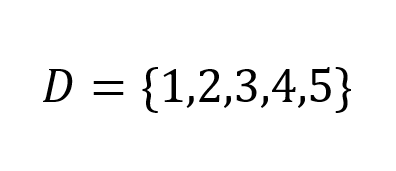
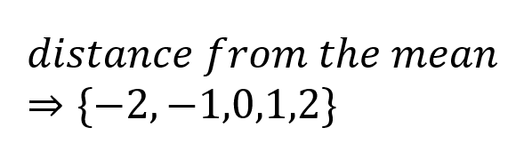
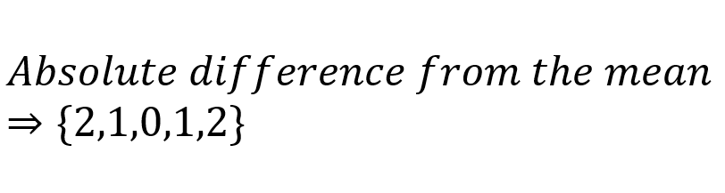
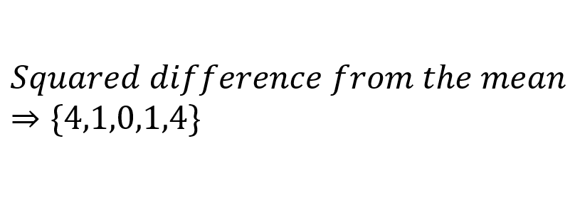
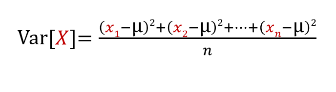

Here I have a set of data:
Suppose we want to describe how dispersed data is. One way to do that is by checking how far each value is from the mean (3), and get the average of that:
If we want to take the average of these values, we get 0; in fact, we will always get 0 no matter what data set we use. This isn't surpirsing since the mean is the center of the data set, so half of the data which is the smaller than the mean will just cancel the other half which is bigger than the mean, resulting in 0. How about we take the absolute difference instead:
The average of the absolute difference is 1.2, this is called the mean absolute deviation. If the values in the data set are very close to each other, that if give a small mean absolute deviation, and if the values are far apart then the mean absolute deviatio would be large. This seems like a good way to measure how spread out the values are, but there is another way, and that is the mean squared deviation (also known as variance), which uses the squared difference instead of the absolute difference:
The mean squared deviation in for our data set is 2. For a random Variable X, the variance of X (Var[X]) would be:
